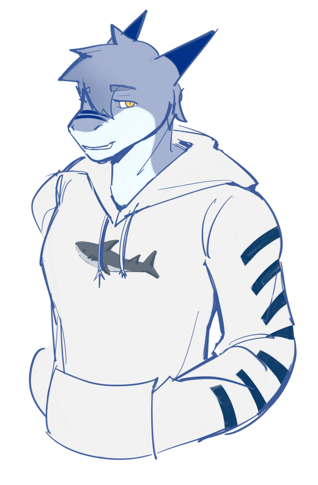

who's the shark?
they/them
Hi hi! I'm Aspen, a shark from Australia with way too many projects going at once. I love making things on computers (websites, bots, little tools), taking photos, and generally messing around online.
It all started with Minecraft when I was about six or seven, and honestly, it's still how my brain works: “what if I built a thing for that?”
This is the version of my site for friends: the silly, unfinished and just-for-fun stuff. The sensible, put-together version lives at aspens.page.
- photos
- code
- characters
- moths
- sunsets
- minecraft brain
stuff I've made (and broken)
Follow a sign to go wandering.
- Character Library Every character I've made, each with their own page and bits and pieces to poke around in.
- Moth Forest A tiny forest full of moths. There's a moth builder and a screensaver too. (Yes, that's where the visitor on this page comes from.)
- Silvershots My photography, in a gallery I built myself, with lightboxes and automatic watermarking.
- The Den The website for the community I hang out in.
- BotKisser A Discord bot that does a bit of everything: games, levels, tickets, moderation. It's for private use, so the sign leads to the code.
- Pride Package Pride flags for React, with plenty of customising. Still growing.
- Calendair A Raspberry Pi touchscreen calendar that doubles as a photo frame. Still on the workbench.
- The Grown-Up Site The tidy, put-together version of me, for anyone who needs the serious one.
come hang out
If you'd like to say hi, send an idea, or just show me a good moth, here's where to find me.